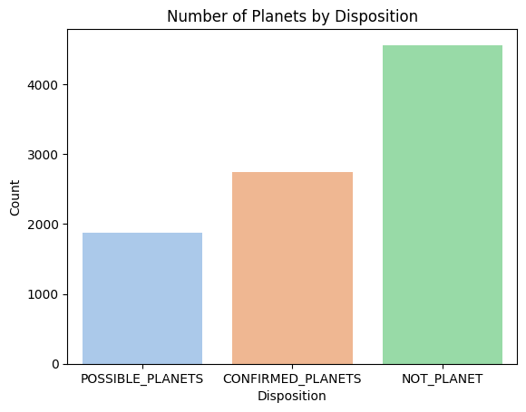
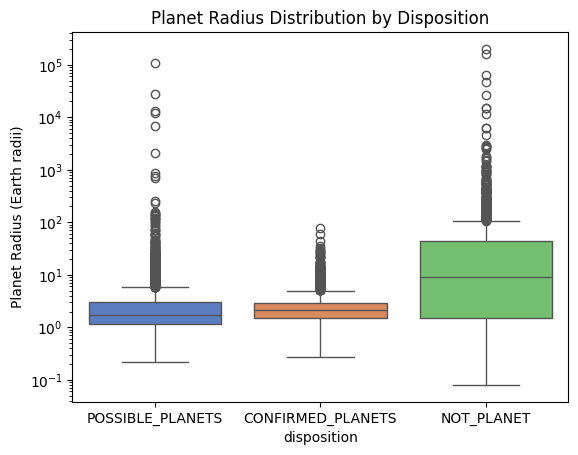
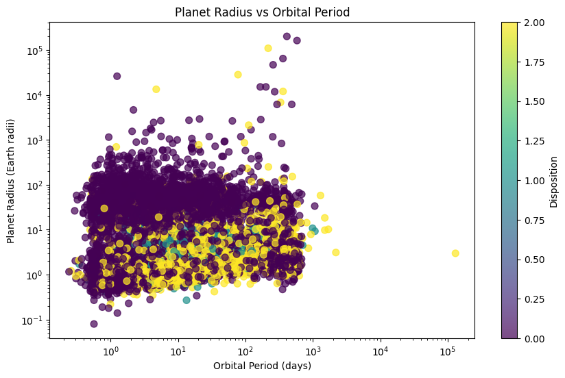
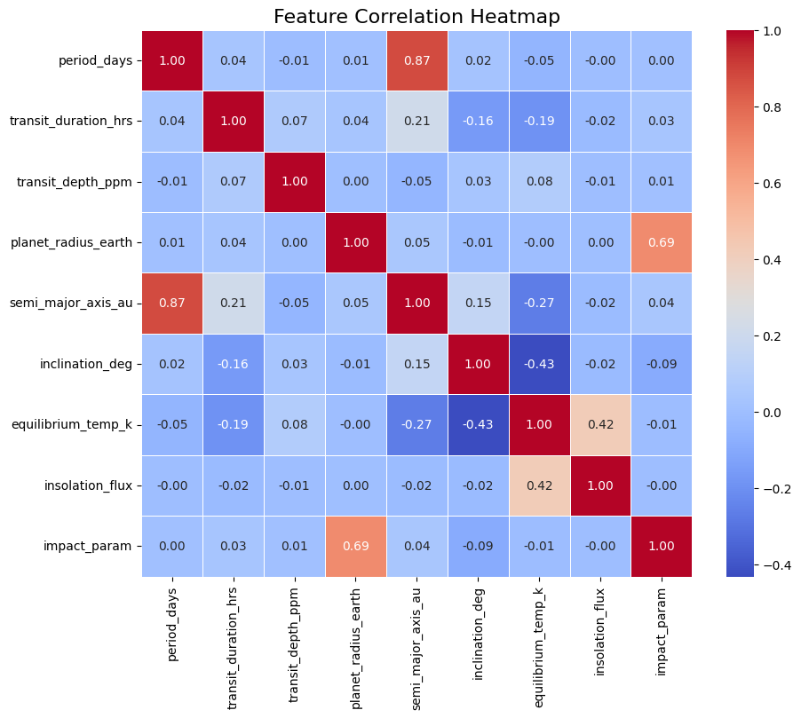

Nasa Space Apps 2025-2026
Visual Representation of Kepler Satellite Data
This graph shows how many planets fall into each group. Most of them turned out to be not real planets; some are confirmed planets, and the smallest group are possible planets that still require further verification.


This box plot shows how planet radii (in Earth radii) are distributed across the three dispositions. Confirmed planets and possible planets usually have radii close to Earth’s size, with fewer extreme outliers. Not planets often show much larger radii, including many outliers, which suggests that some detections were actually stars or other objects mistaken for planets. To sum it up, not all planets have many more outliers and often have two high of a radius.
Planet Radius vs Orbital Period scatter plot shows the relationship between a planet’s orbital period (days) and its radius (Earth radii). Most planets (dots) are small to medium in size (close to Earth’s radius), with shorter orbital periods.A few have extremely large radii, which are likely not real planets (false positives).The different colors represent the planet’s disposition (possible, confirmed, or not a planet). In simple terms, most real planets are Earth-sized and orbit relatively quickly, while the “not planets” often appear unrealistically large.

This scatter plot shows the relationship between a planet’s orbital period (days) and its distance from the star (semi-major axis in AU). The points form a clear upward curve: planets farther from the star take much longer to complete an orbit. The colors represent planet disposition — possible, confirmed, or not a planet — but all groups follow the same trend, showing how orbital mechanics apply consistently.
This heatmap shows how different features in the dataset are related to each other. Dark red means a strong positive relationship (as one goes up, the other also goes up), while dark blue means a strong negative relationship (as one goes up, the other goes down). For example, period_days and semi_major_axis_au are very strongly related (0.87), which makes sense because planets farther from their star take longer to orbit. Similarly, planet_radius_earth and impact_param also show a strong link (0.69). Most other features have weaker or very little relationship.
